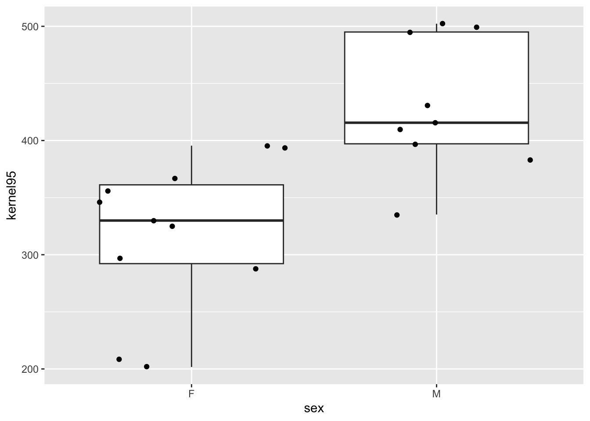
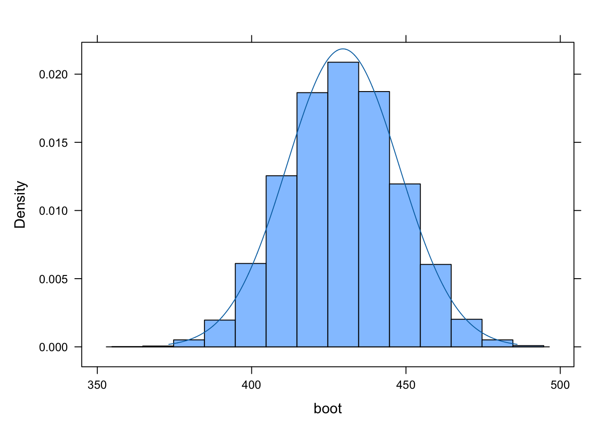
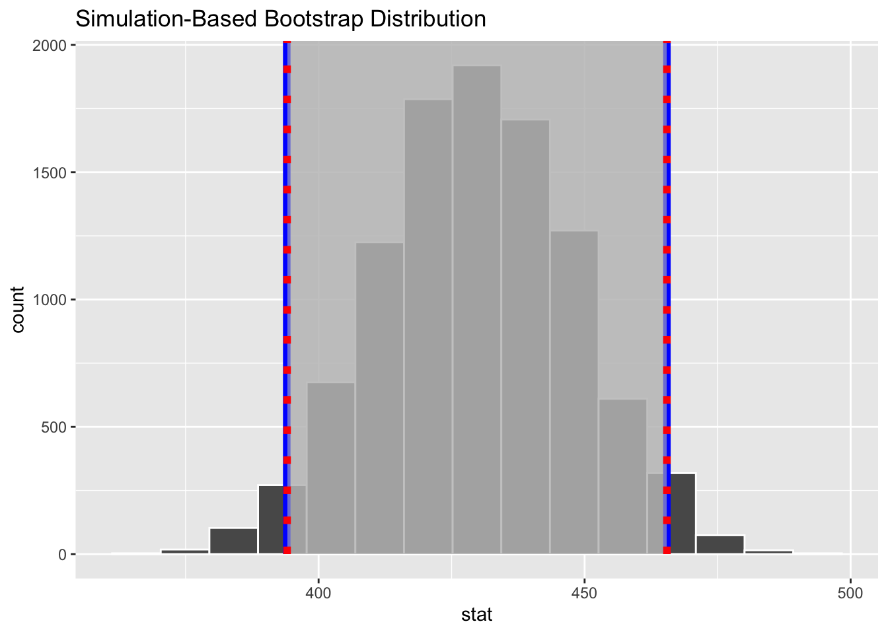
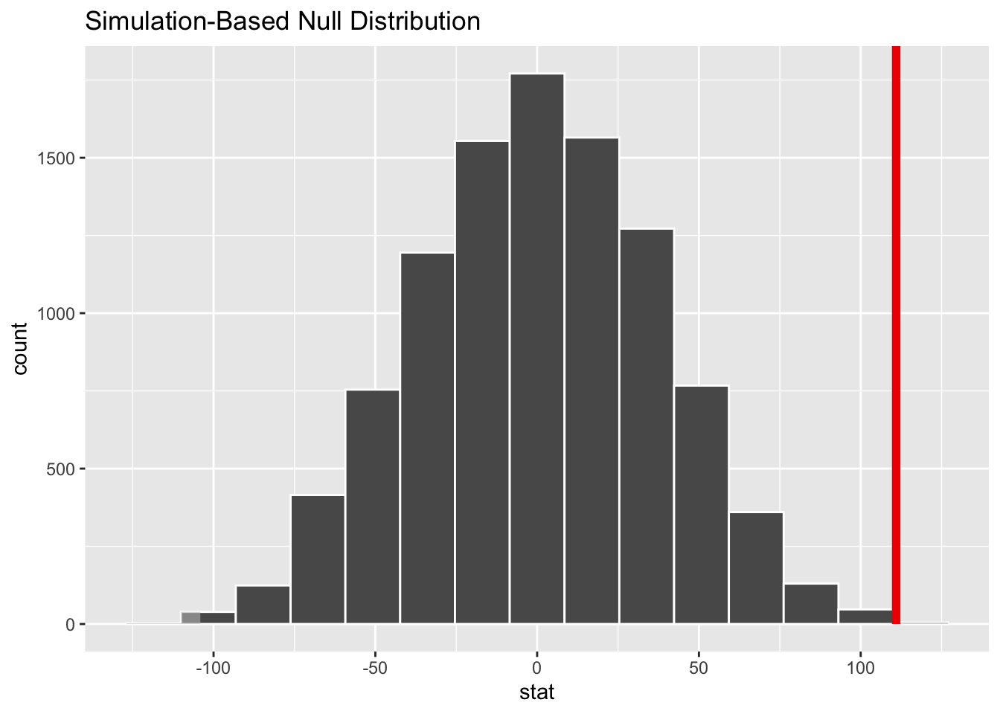

# A tibble: 2 × 5
sex mean sd n se
<chr> <dbl> <dbl> <int> <dbl>
1 F 319. 65.7 11 19.8
2 M 430. 58.3 9 19.4
Create boxplots comparing “kernel95” home range size by sex.
p <-ggplot(data = d, aes(x = sex, y = kernel95)) +geom_boxplot() +geom_jitter()p

For each sex, generate a bootstrap distribution for mean kernel95 home range size.
NOTE: The code below does this for males… simply replace “M” with “F” in the filter() statement to do the same for females.
# ci in mean HR sizen_boot <-10000s <- d %>%filter(sex =="M")# option 1 - using {base} Rboot <-vector()# the size of each bootstrap sample should equivalent to# the size our original samplefor (i in1:n_boot){ boot[[i]] <-mean(sample(s$kernel95, length(s$kernel95), replace=TRUE))}# option 2 - using {mosaic}boot <-do(n_boot) *mean(sample(s$kernel95, size =length(s$kernel95), replace =TRUE))boot <- boot$mean # pull out mean column as vector# option 3 - using {infer}boot <- s %>%rep_sample_n(replace =TRUE,size =nrow(.),reps =10000) %>%group_by(replicate) %>%summarize(mean =mean(kernel95))boot <- boot$mean # pull out mean column as vector
Plot the resulting bootstrap sampling distribution and plot an appropriate normal distribution over the bootstrap sampling distribution.
se <-sd(boot)histogram(boot)plotDist("norm", mean(boot), se, add =TRUE)

Calculate a 95% confidence interval around for the mean kernel95 home range size for each sex…
Using the quantile() method applied directly to your bootstrap sampling distribution, and
Using the theory-based “standard error” method, based on qnorm() and the standard deviation of your bootstrap sampling distribution.
We can also do all of the above using the {infer} package’s specify() → generate() → calculate() → visualize() workflow…
# option 4 - using {infer}boot <- s %>%specify(response = kernel95) %>%generate(reps = n_boot, type ="bootstrap") %>%calculate(stat ="mean")ci_boot <- boot %>%get_confidence_interval(type ="percentile", level =0.95)ci_theory <- boot %>%get_confidence_interval(type ="se", level =0.95,point_estimate =mean(s$kernel95))visualize(boot) +shade_confidence_interval(endpoints = ci_theory, color ="blue", lty =1, size =0.5, fill ="#c0c0c0") +shade_confidence_interval(endpoints = ci_boot, color ="red", lty =3, size =0.5, fill ="#c0c0c0")

Use simulation-based permutation to evaluate the difference in mean kernel95 home range size for males versus females. To do this, you will want to shuffle either the variable "sex" or "kernel95" home range size a total of 10,000 times, recalculating mean kernel95 size by sex for each permuted sample and then compare the difference in male and female kernel95 means from your original sample to the permutation distribution for the difference in means.
n_perm <-10000# number of permutations# create a dummy vector to hold results for each permutationpermuted_diff <-vector()permuted_data <- dfor (i in1:n_perm) {# scramble the sex vector:# `sample()` with a vector as an argument yields a# random permutation of the vector permuted_data$sex <-sample(permuted_data$sex) m <- permuted_data[permuted_data$sex =="M",]$kernel95 f <- permuted_data[permuted_data$sex =="F",]$kernel95 permuted_diff[[i]] <-mean(m) -mean(f) }histogram(permuted_diff)
Again, we can do this whole process using the {infer} package workflow…
null_distribution <- d %>%specify(formula = kernel95 ~ sex) %>%hypothesize(null ="independence") %>%generate(reps = n_perm, type ="permute") %>%calculate(stat ="diff in means", order =c("M", "F"))actual_diff <- d %>%specify(formula = kernel95 ~ sex) %>%calculate(stat ="diff in means", order =c("M", "F"))actual_diff
Response: kernel95 (numeric)
Explanatory: sex (factor)
# A tibble: 1 × 1
stat
<dbl>
1 111.
null_distribution %>%get_p_value(obs_stat = actual_diff, direction ="both")
# A tibble: 1 × 1
p_value
<dbl>
1 0.0008
visualize(null_distribution) +shade_p_value(obs_stat = actual_diff, lty =1, size =0.5, fill ="#c0c0c0", direction ="both")

Under this approach, what is the “null” hypothesis? What is the test statistic? Is the difference in mean kernel95 home range size “significant”?
The null hypothesis here is that the difference in mean kernel95 home range size for males versus females is zero. The test statistic is the actual difference in mean kernel95 home range size for males versus females, and it is evaluated relative to a permutation distribution for this statistic. Based on our very low p value (less than 0.001), under a null hypothesis significance testing framework, we would conclude that the difference is “significant” (assuming that p is less than the alpha level we specify).
Finally, use a theory-based parametric test (e.g., a t-test) to also calculate an appropriate test statistic and associated p value for the comparison of male and female mean kernel95 home range size. Is the difference in mean kernel95 home range size “significant”?
f <- d %>%filter(sex =="F")m <- d %>%filter(sex =="M")# first, what is ratio of variances in our two samples?var_f <-var(f$kernel95)var_m <-var(m$kernel95)var_f/var_m
[1] 1.272656
# ratio is less than 2.0, so we can use equal variance version of t test...num_f <-nrow(f)num_m <-nrow(m)mean_f <-mean(f$kernel95)mean_m <-mean(m$kernel95)# hand-calculate test statistic and p value...s2 <- ((num_m-1) * var_m + (num_f-1) * var_f)/(num_m + num_f -2)t_stat <- (mean_m - mean_f) /sqrt(s2 * (1/num_m +1/num_f))t_stat
[1] 3.94816
df <- num_m + num_f -2p <-2* (1-pt(t_stat, df))p
[1] 0.0009426349
# or use t.test() functiont_test <-t.test(x=m$kernel95, y = f$kernel95, var.equal =TRUE)t_test
Two Sample t-test
data: m$kernel95 and f$kernel95
t = 3.9482, df = 18, p-value = 0.0009426
alternative hypothesis: true difference in means is not equal to 0
95 percent confidence interval:
51.91339 169.99890
sample estimates:
mean of x mean of y
429.7407 318.7846
Under this approach, what is the test statistic? Is the difference in mean kernel95 home range size “significant”?
Here, the null hypothesis again is that the difference in mean kernel95 home range size for males versus females is zero. The test statistic is the actual difference in means scaled by something equivalent to a standard error that takes into account the variance and size of our two samples. This test statistic is then evaluated relative to a t distribution that depends on the number of degrees of freedom, which depends on the sample size of our two samples. Again, based on the very low p value, we would conclude that the difference is “significant” under a null hypothesis significance testing framework (assuming that p is less than the alpha level we specify).